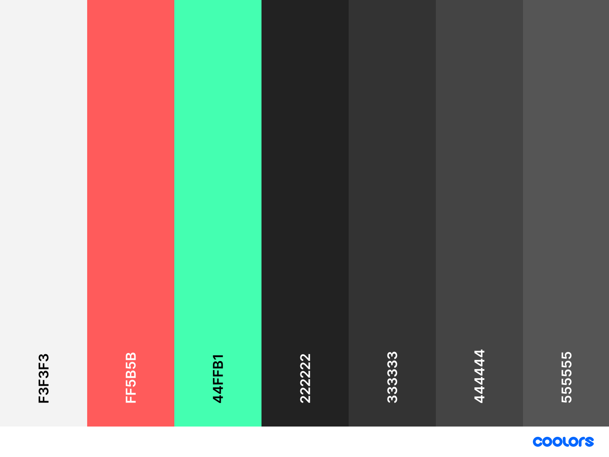

Table of contents
Introduction
Within this report, I shall be discussing a number of topics such as my experience with this module, how I found the development, design and debugging of this assignment. Furthermore, I shall discuss issues that had arisen during the development of my portfolio and how these issues were debugged and fixed. Finally, I shall also include screenshots and links to images and sites that influenced by design decisions.
Development over the term
Coming to the university, I already had a lot of prior experience with web technology and I had worked on large projects however, I had little knowledge on the history of the web and how it came to be what it is today. So firstly, I began creating my index page which would essentially just be the homepage, I chose to include my name in the centre of the page, a navigation bar across the top of the page which would span the entire width of the page. I chose to include the navigation bar at the top of the page rather than anywhere else as it is very common among most website and would therefore, be more intuitive to the users. Furthermore, I also wanted to include a background video Redfield, J. (2019) with a slight blur or an opaque layer. In the end I chose to use the background video as it seems to appear a lot in modern web pages and adds a lot more character especially for web pages with minimal content. I selected my colour scheme using a website called Coolors. I wanted to have a dark colour scheme as it is a lot easier on the eyes. A light theme looks professional and trustworthy however, I chose not to implement that at this stage. At a later stage I could implement a switch so users can chose if they want a dark or light theme or by using the CSS prefers-color-scheme feature to detect the users browser theme.
For the footer design, I chose to pick my primary colour as it provides a nice contrast between the dark grey. I also made the text within the footer the darkest grey within my colour palette as it would contrast with the bright primary colour. Additionally, I made the text bold as it was quite small and I still wanted it to stand out as if the text size was increased.

For my entire website, I used the Roboto font as it is easily readable and is very popular. Furthermore, it is developed by Google which is trustworthy
File validation
Within this section are the screenshots proving that all of my files validate (HTML and CSS).
HTML files

CSS files


Bibliography
- Blazek, L. (2017) Macbook Pro beside Spiral Notebook, Available at: https://www.pexels.com/photo/macbook-pro-beside-spiral-notebook-669616/ (Accessed: 25th November 2020).
- Gomes, L. (2017) Black and gray laptop computer, Available at: https://www.pexels.com/photo/blur-close-up-code-computer-546819/ (Accessed: 20th November 2020).
- Negative Space. (2016) Blue and white orange green Rubik's cube, Available at: https://www.pexels.com/photo/game-tricks-play-cheats-34591/ (Accessed: 25th November 2020).
- Nikhomkhai, P. (2018) Black and gray mining Rig, Available at: https://www.pexels.com/photo/bandwidth-close-up-computer-connection-1148820/ (Accessed: 4th November 2020).
- Pixabay. (2016) PHP Screengrab, Available at: https://www.pexels.com/photo/abstract-business-code-coder-270348/ (Accessed: 12th November 2020).
- Redfield, J. (2019) Computer Monitor Display, Available at: https://www.pexels.com/video/computer-monitor-display-2278095/ (Accessed: 12th November 2020).
- TrueThemes (2020) Niko - Resume/CV, Available at: https://n.foxdsgn.com/niko/black/ (Accessed: 3rd December 2020).
- Google. (2020) University of Northampton, Available at: https://www.google.com/maps/place/University+of+Northampton/@52.2276282,-0.8922932,16z/data=!4m5!3m4!1s0x48770ec7832a01f1:0x965dedc9c5712ba8!8m2!3d52.230488!4d-0.8869891 (Accessed: 4th December 2020).
- Material Design. (2020) Icons, Available at: https://material.io/resources/icons/?style=baseline (Accessed: 19th November 2020).
- Robertson, C. (2020) Roboto, Available at: https://fonts.google.com/specimen/Roboto (Accessed: 3rd December 2020).